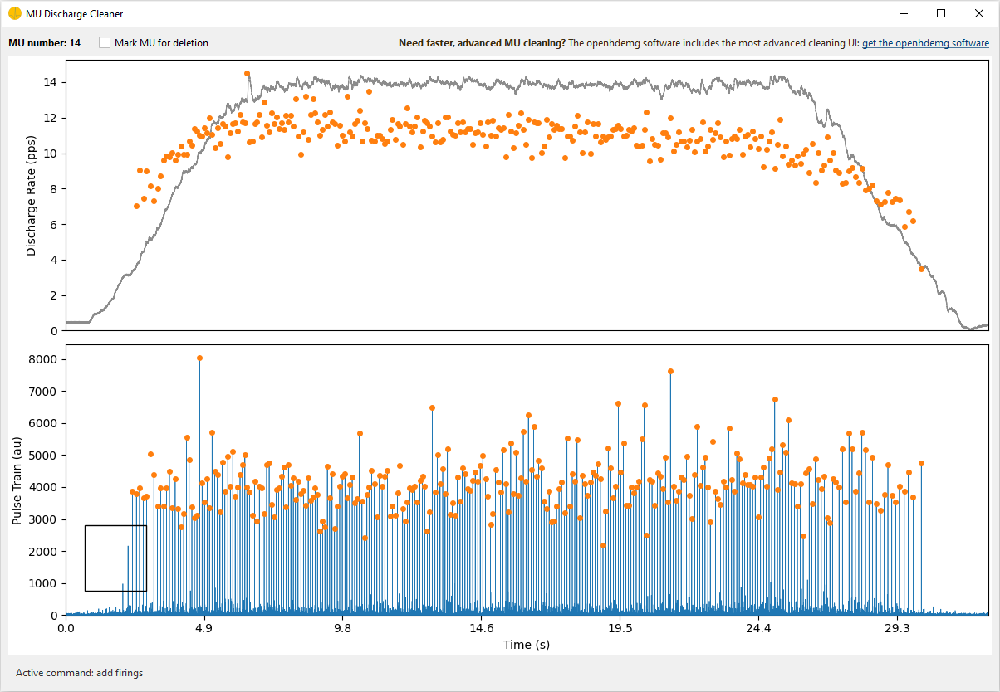

Open a portable modal UI for cleaning MU discharge selections obtained via
convolutive blind source separation.
Close the window to return the edited EMG file. The caller is responsible
for finalising and saving the returned object.
Advanced MU cleaning
Please note that the most advanced MU cleaning tools are available in
the openhdemg software. You can find it at:
https://www.giacomovalli.com/openhdemg_software/
This UI allows to:
- visually inspect the blind source separation discharge time selection.
- visually inspect the source separation.
- to add and delete firings.
- mark MUs to delete.
- update the separation filter based on the manually selected discharge
times.
All the actions can be performed using the following shortcuts:
- A: Toggle rectangular add mode. Samples of the selected IPTS trace inside
the rectangle are added to the current MU discharge times.
- D: Toggle rectangular delete mode. Current MU discharge times inside the
rectangle are removed.
- W: Recompute the current MU filter and IPTS from the current discharge
times.
- E: Reset the current plot view.
- Shift+Right or Shift+Left: Move to the next or previous MU.
- Mouse wheel: Zoom in or out on the time axis around the cursor.
Updated variables
This UI updates only the manually edited discharge information. In
particular, it can update MUPULSES when firings are added or
removed, and IPTS when the W command recomputes the current MU
source. It does not delete MUs marked with the checkbox, and it does
not finalise derived fields such as SIL/ACCURACY or
BINARY_MUS_FIRING after MU deletion. Those operations should be
handled by the calling script, for example with the openhdemg library
functions. For examples, see run_bss_mu_editor().
| PARAMETER |
DESCRIPTION |
emgfile
|
Decomposed openhdemg file.
TYPE:
dict
|
e_w_sig
|
Already filtered, extended, and whitened EMG signal with shape
(features, samples). It is used directly by the W command.
TYPE:
array - like
|
refsig_channel
|
Reference signal channel to plot behind the discharge rate trace.
TYPE:
int or str
|
ipts_transform
|
Non-linear transformation applied to the source recomputed with W.
TYPE:
(None, s * abs(s))
DEFAULT:
"None"
|
| RETURNS |
DESCRIPTION |
edited_emgfile
|
TYPE:
dict
|
mus_to_delete
|
Original MU indexes marked for deletion. Delete them using
delete_mus.
TYPE:
list of int
|
Examples:
Prepare the preprocessed, extended, centered, and whitened signal in the
calling script, then open the cleaning UI.
Import needed modules
>>> import numpy as np
>>> import pandas as pd
>>> import openhdemg.library as emg
>>> from openhdemg.ui import run_bss_mu_editor
Load openhdemg module decomposed using EMGDecomposer
>>> emgfile = emg.askloadmodule()
Extract needed decomposition parameters
>>> decomp_params = emgfile["DECOMPOSITION_PARAMETERS"]
>>> extension_factor = int(decomp_params["extension_factor"])
>>> eigenvalue_percentile = float(decomp_params["eigenvalue_percentile"])
Rebuild the same signal used by the decomposition preprocessing pipeline.
The prepared signal will only be used for cleaning and will not update the
original emgfile.
>>> working_emgfile = emgfile
>>> bandpass_params = decomp_params["bandpass_filtering"]
>>> if bandpass_params["enabled"] is True:
... working_emgfile = emg.filter_rawemg(
... emgfile=working_emgfile,
... order=bandpass_params["order"],
... lowcut=bandpass_params["lowcut"],
... highcut=bandpass_params["highcut"],
... )
Extract the EMG signal and store it as an array with channels as rows,
samples as columns.
>>> emg_sig = working_emgfile["RAW_SIGNAL"].to_numpy(dtype=np.float64).T
Apply power-line harmonics removal when it was used during decomposition.
>>> powerline_params = decomp_params["powerline_harmonics"]
>>> if powerline_params["enabled"] is True:
... emg_sig = emg.remove_powerline_harmonics(
... sig=emg_sig,
... fsamp=emgfile["FSAMP"],
... notch_freq=powerline_params["notch_freq"],
... notch_width=powerline_params["notch_width"],
... )
Remove bad channels when this was used during decomposition.
>>> if decomp_params["exclude_bad_channels"] is True:
... good_channels = emgfile.get("GOOD_CHANNELS", None)
... if good_channels is not None:
... good_idx = sorted(
... int(ch) for ch, ok in good_channels.items() if ok
... )
... emg_sig = emg_sig[good_idx, :]
Prepare the extended, centered, and whitened signal.
>>> e_sig = emg.extend_emg_signal(
... sig=emg_sig,
... ext_fact=extension_factor,
... )
>>> e_sig = e_sig - np.mean(e_sig, axis=1, keepdims=True)
>>> e_w_sig = emg.svd_whitening(
... e_sig=e_sig,
... eigenvalue_percentile=eigenvalue_percentile,
... )
Align with the original sample indexes used by MUPULSES/IPTS.
>>> e_w_sig = np.pad(
... e_w_sig,
... ((0, 0), (extension_factor, 0)),
... mode="constant",
... constant_values=0,
... )
Start the editor
>>> edited_emgfile, mus_to_delete = run_bss_mu_editor(
... emgfile=emgfile,
... e_w_sig=e_w_sig,
... refsig_channel=0,
... )

Once editing is completed, delete MUs marked in the UI
>>> if mus_to_delete:
... edited_emgfile = emg.delete_mus(
... edited_emgfile,
... munumber=mus_to_delete,
... if_single_mu="remove",
... )
Also check for duplicate MUs that might have emerged from manual editing,
if duplicate removal is enabled in the decomposition metadata.
>>> duplicate_params = decomp_params["duplicate_removal"]
>>> if duplicate_params["enabled"] is True:
... edited_emgfile = emg.remove_duplicates_within(
... emgfile=edited_emgfile,
... correlation_max_lag=duplicate_params["correlation_max_lag"],
... peak_window_half_width=duplicate_params["peak_window_half_width"],
... duplicate_threshold=duplicate_params["duplicate_threshold"],
... which=duplicate_params["which"],
... )
Recalculate SIL for all remaining MUs.
>>> sil_values = []
>>> for mu in range(edited_emgfile["NUMBER_OF_MUS"]):
... sil = emg.compute_sil(
... ipts=edited_emgfile["IPTS"][mu],
... mupulses=edited_emgfile["MUPULSES"][mu],
... compute_on_peaks_only=True,
... )
... sil_values.append(sil)
>>> edited_emgfile["ACCURACY"] = pd.DataFrame(sil_values)
Recalculate binary MU firings.
>>> edited_emgfile["BINARY_MUS_FIRING"] = emg.create_binary_firings(
... emg_length=edited_emgfile["EMG_LENGTH"],
... number_of_mus=edited_emgfile["NUMBER_OF_MUS"],
... mupulses=edited_emgfile["MUPULSES"],
... )
Standardise emgfile dtypes
>>> edited_emgfile = emg.standardise_emgfile_dtypes(emgfile=edited_emgfile)
Save the cleaned emgfile
>>> emg.asksavemodule(emgfile=edited_emgfile)